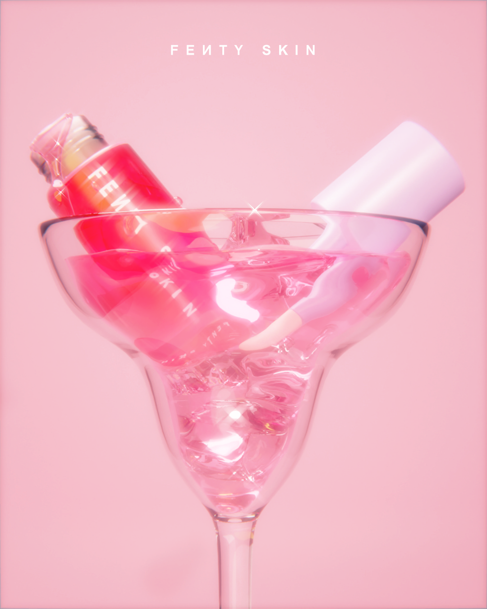
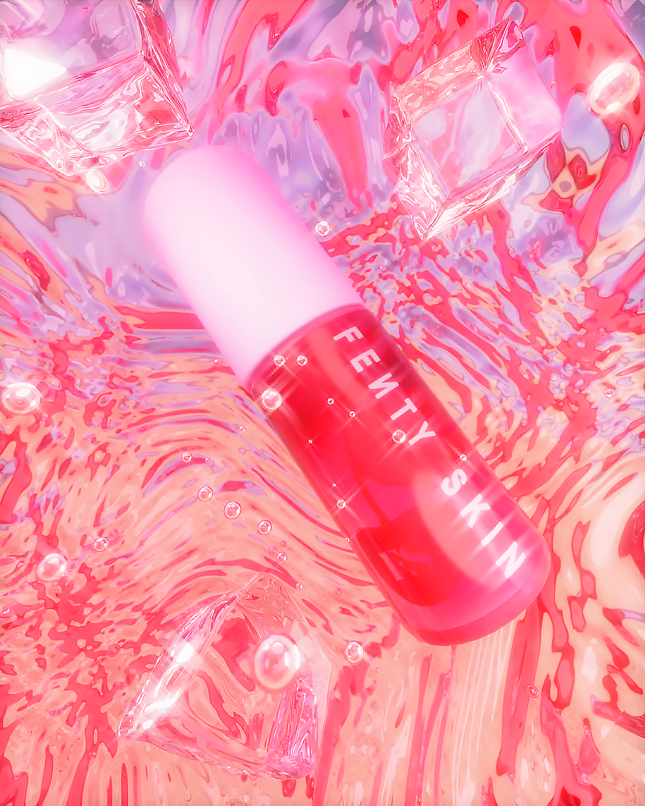
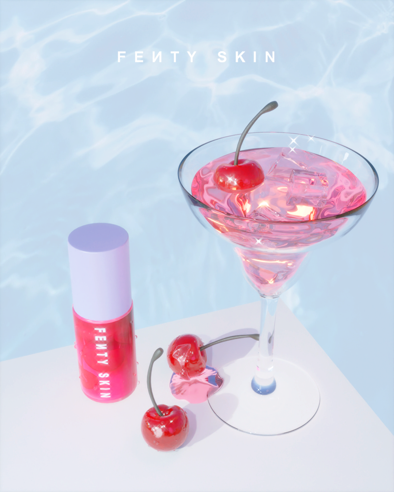
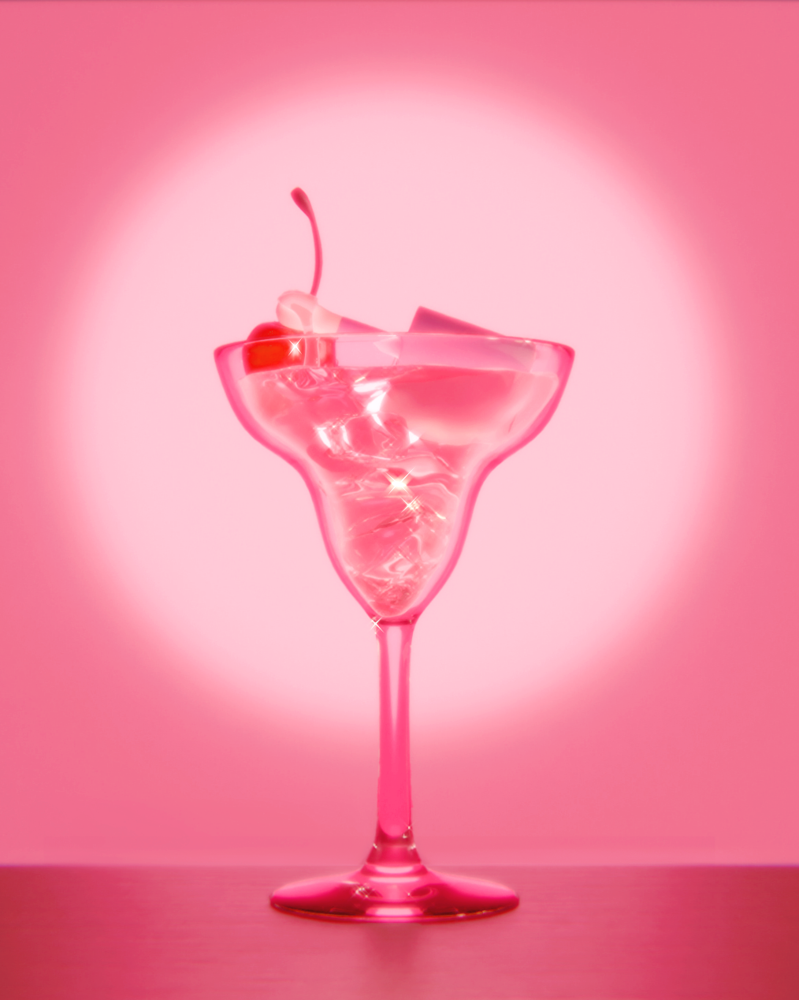

Fenty Skin
- Client
- Fenty Skin
- Rôle
- Direction artistique, modélisation 3D, lighting, retouches
- Demande
- Réalisation de visuels publicitaires en 3D sur Blender pour le lip oil de la marque Fenty Skin.
Les visuels s'imprègnent de l'esprit estival et coloré de la marque. Ici, le lip oil est présenté comme aussi rafraîchissant et agréable que de boire un cocktail frais en été.



